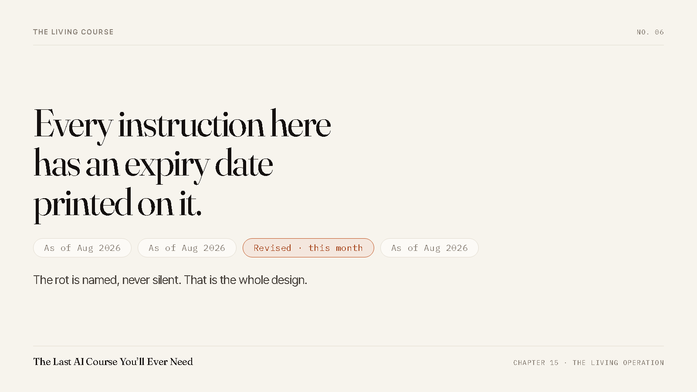

A Course About AI, With an Expiry Date Printed Inside It
Everything I could teach you about a specific tool is wrong within a year. So the tool parts carry a date, and you can see exactly which parts they are.

---
THE OBVIOUS OBJECTION, ANSWERED
Everything I could teach you about a specific tool is wrong within a year. So the tool parts carry a date, and you can see exactly which parts they are.
Here is the objection, and I am going to put it in its strongest form rather than a weak one I can knock over.
Why would you pay for a course about AI in 2026. The tools change monthly. The interface in the screenshots will not exist by spring. Half of what any AI course teaches is a workaround for a limitation that gets fixed in the next release, and then you are holding a set of instructions for a machine that no longer works that way. You have probably already bought one of these. It is sitting in a folder somewhere going quietly out of date, and you feel a bit stupid about it.
That is a good objection. Most courses in this category deserve it.
The split that answers it
There are two kinds of thing in a course like this, and they age at completely different speeds.
One kind is a tool instruction. Click here, this setting is under that menu, this model handles that better than the other one, here is the current price of a thing. That is perishable. Not "might age badly" — it is designed to be wrong eventually, because the tool vendors keep shipping.
The other kind is the method. How you keep a record the AI reads before it answers. How you log a decision so the reason survives with it. How you check that work happened instead of believing the report. How you write down what a job is and what it may never touch, so you can hand it over and stop watching. None of that has a version number. It did not come from a vendor. It came from having to run something and not being able to hold it all in my head.
Move models tomorrow and every one of those still applies, because they are not about the model. They are about the fact that you are one person trying to get a lot of things done and you cannot personally verify all of it.
The method layer is the course. The tool layer is the trim.
What the date on the page actually does
Every tool-specific instruction carries a small badge. It reads As of Aug 2026.
That is not decoration and it is not a disclaimer buried in the footer. It sits on the instruction, in the place you are reading, so that when you open the course in eighteen months you can see instantly which lines are load-bearing and which ones you should go check before you trust them.
I want to be blunt about why that badge exists, because the reason is not generosity. It is that the alternative is lying. A page with no date on a perishable instruction is claiming to be current. It will keep claiming that long after it stops being true, and the person who finds out is you, at the worst possible moment, having already paid.
Naming the rot costs me a little polish. Hiding it would cost you a Tuesday.
And the perishable layer is kept current as the tools change — corrections and revisions to your copy are included, so what you paid for does not go stale. Genuinely new products I build later are sold separately. That much is affordable for a specific and unglamorous reason: the updates are a byproduct of running the company. When something in my own operation breaks and I fix it, the fix has already been written down, because I write it down whether or not there is a course. Nobody has to go and make an update. The update already happened; it just gets published.
We failed our own check
Here is what living actually looks like in practice, and it is not flattering.
We keep a claims ledger. Every number that appears on any surface we publish has to have a row in it saying where the number came from. No row, no number. It exists because our whole argument is that our receipts are real, and a brand like that dies the first time somebody counts.
Last week a claim of our own about our own history went through that check and did not survive it. Not a wild exaggeration. A number that had been accurate once, kept getting printed, and quietly stopped matching what you would find if you went and counted the files yourself. It was on the subtitle. It was on everything.
Nobody outside would have noticed for a long time. We pulled it anyway, wrote up why in the ledger, and replaced it with a form we can prove on demand.
That is the whole discipline in one story. A living course is not a course that gets extra bonus modules bolted on. It is a course attached to an operation that keeps auditing itself and publishing what the audit found, including when the audit is about us.
The honest limit
I will not tell you this course is future-proof, because that is not a thing.
What I will tell you is where it fails. If a model arrives that genuinely does not need to be checked, that keeps its own honest record, and that can be handed a job with no boundary written around it, then a real chunk of this becomes history rather than instruction. I do not think that is close. I have been wrong before and I write those down too.
Until then, the thing that separates people who get value out of AI from people who have a subscription is not which tool they picked. It is whether anything they did last month is still working for them this month. That is a records problem and a delegation problem, and both of those are older than any of these tools.
What is in it
Fifteen chapters, three parts, built inside a real company that has run on AI for hundreds of sessions. Every chapter carries a real incident out of our own sessions, and the ones where we got it wrong are in there deliberately, because those are the ones that teach.
Chapter one is free, and it is the chapter about why AI hands you generic answers and the three things you change to stop it. Read it or listen to it, whichever suits your week.
Send me the free chapter → One click to sign up — Google or Microsoft, no password to invent. No card, no call.
— Chris Corey, Co-Founder, KitFire AI